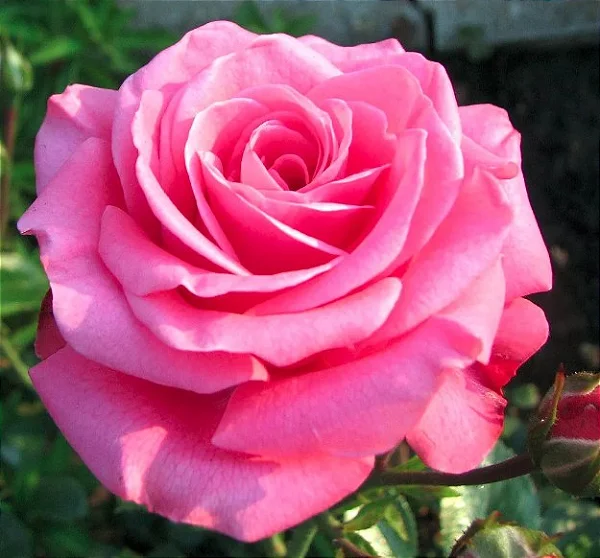

Jardim de Flores
Ver tipos de flores
Início
Sobre
Contato
Bem vindos!
Esse site foi feito para mostrar alguns tipos de flores que eu gosto.
Tipos de Flores
Rosa
Flor muito bonita que tem em várias cores.
Girassol
Flor amarela grande, minha favorita.
Tulipa
Flor muito colorida que aparece bastante na primavera.